Projects
Portfolio Website
A responsive portfolio built with basic HTML codes.
Resume Design
Modern resume layouts created with Canva.
https://www.canva.com/design/DAGEPyiaFKg/8aG5cvnbo50VWDde2zvdug/view?utm_content=DAGEPyiaFKg&utm_campaign=designshare&utm_medium=link2&utm_source=uniquelinks&utlId=hb571023b04JavaScript
A Java Swing GUI project built to complete a school requirement. It collects user details through a form and uses event-driven programming to process actions like submitting or clearing input.
Output:
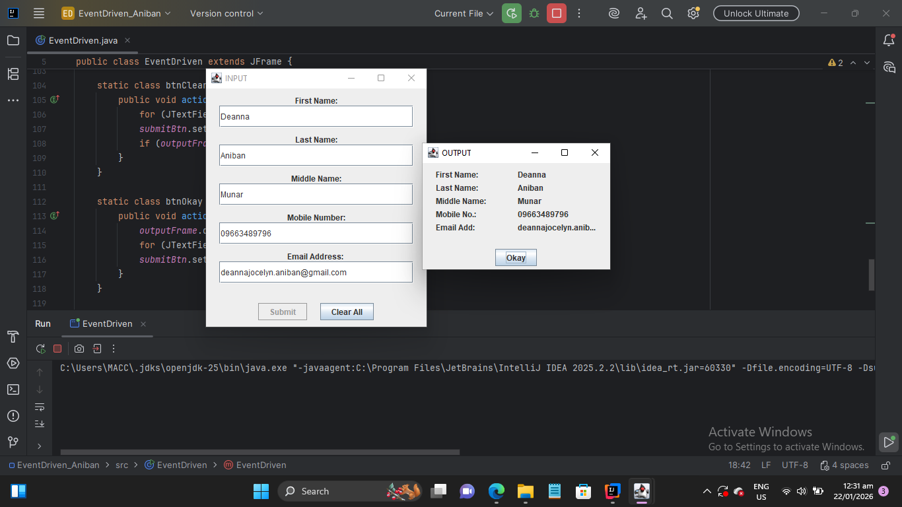
Code:
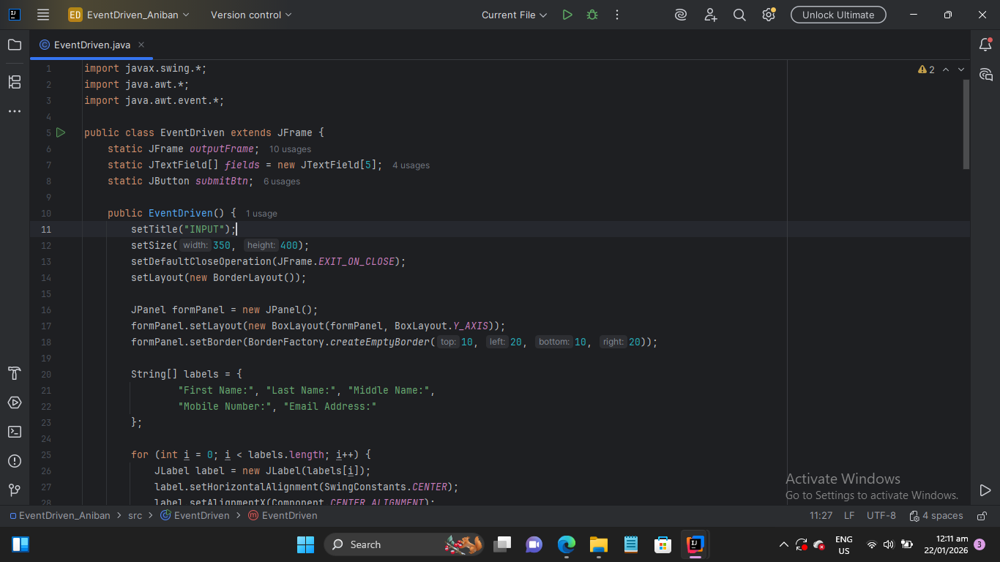 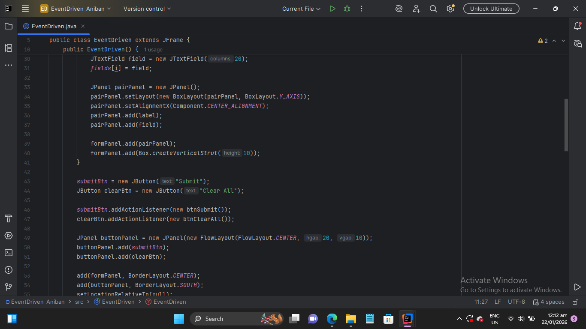 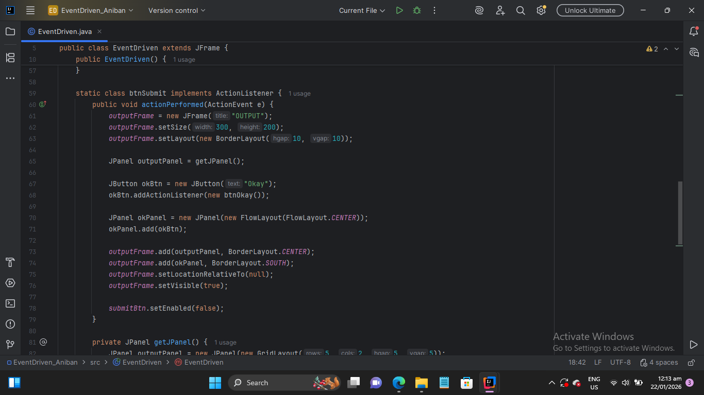 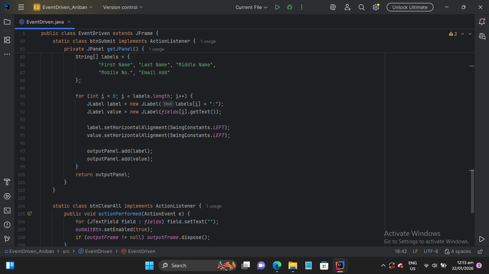 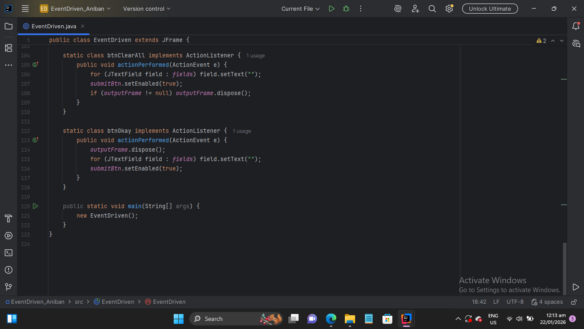CSS and HTML
A school project that uses HTML and CSS to visualize fixed memory partitions, showing process usage and wasted space with color‑coded blocks.
Output:
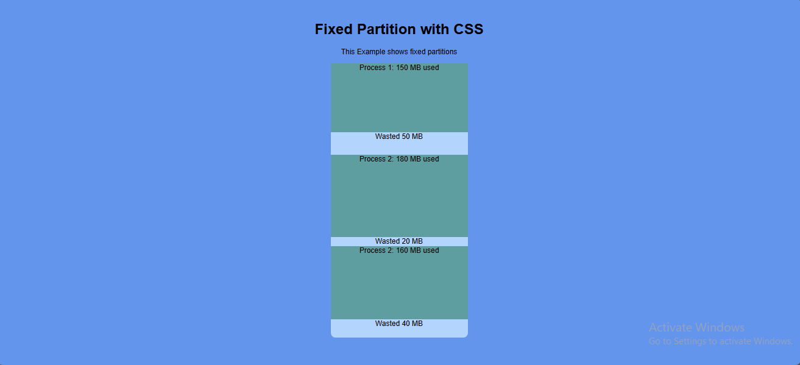
Code:
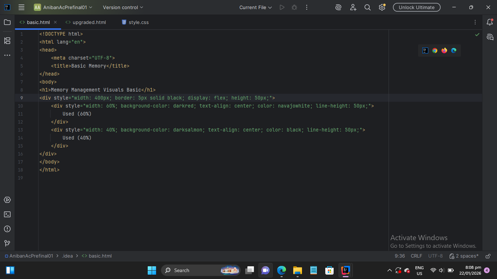 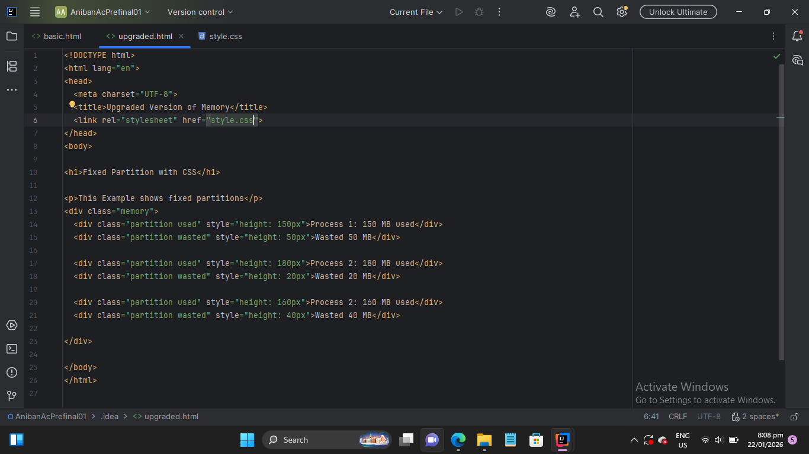 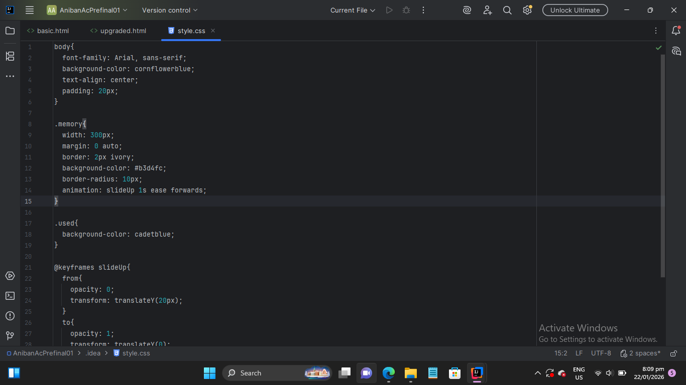Guessing Game
A beginner C++ project where I coded a number guessing game. Built for fun and as a challenge, it uses loops, conditionals, and random number generation to give feedback until the correct guess is made.
Output and code using programiz
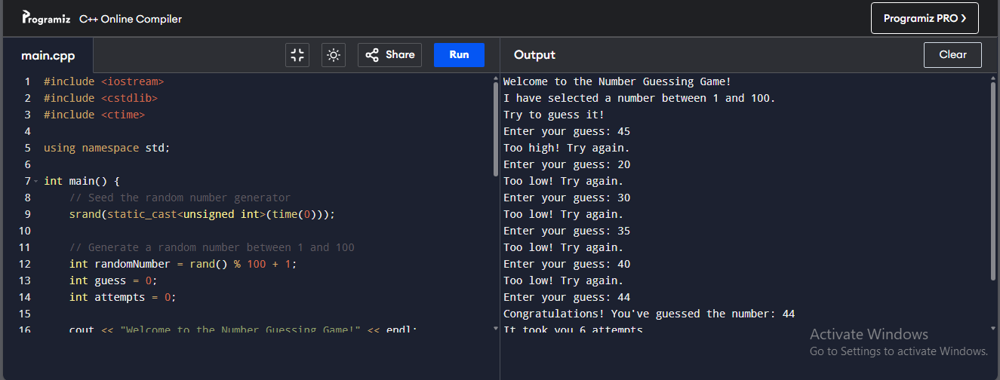 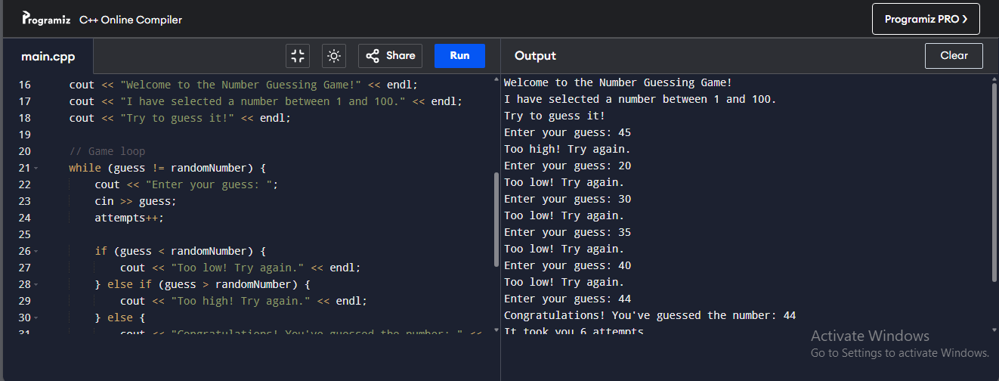